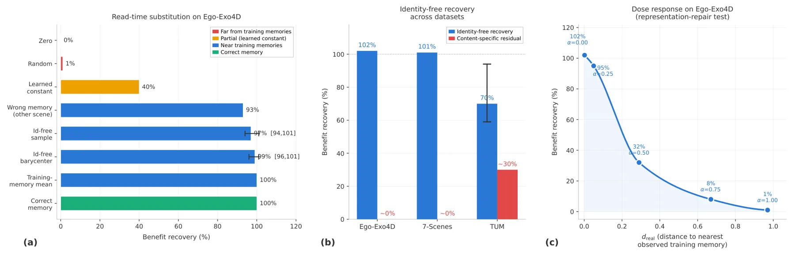
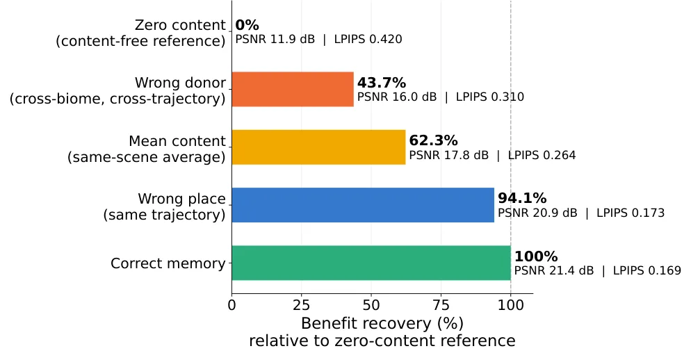
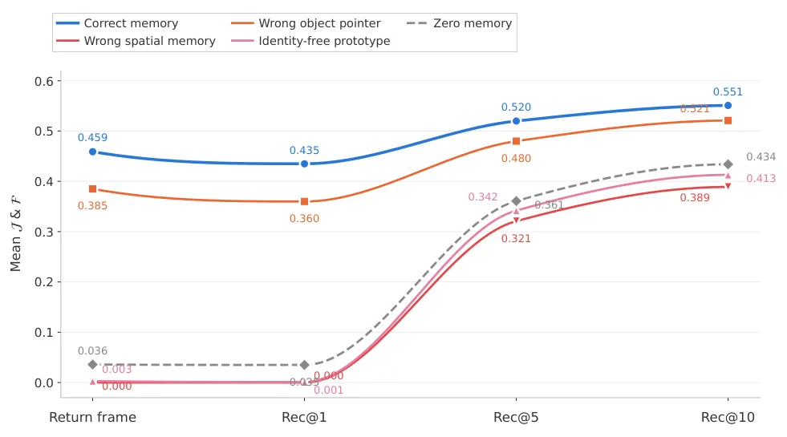
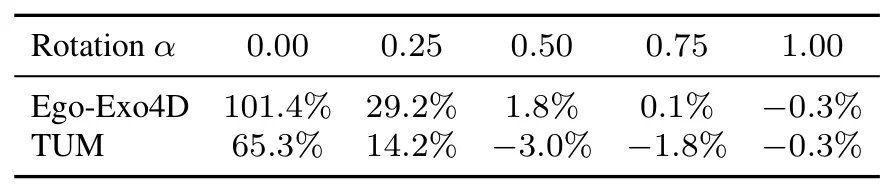
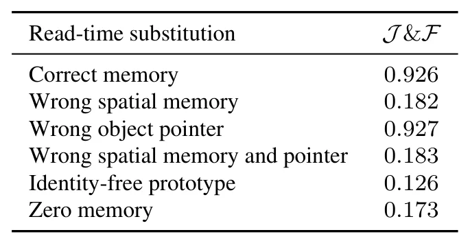

视频记忆是否使用了检索内容？记忆特异性的因果审计Does Video Memory Use What It Retrieves? A Causal Audit of Memory Specificity
A 级 spatial memory/world model 分析，直接涉及长时空表征的内容依赖与失效边界。
一句话工作总结
这项工作为视频世界模型和空间记忆提供了直接的因果审计：记忆有用不代表检索内容被真正使用。
半海报（待补全）
当前记录尚未达到完整海报质量门槛，暂不把摘要或评分理由冒充方法/实验结论。
待补字段：研究上下文.lineage（至少 2 条实质条目）、研究上下文.network（至少 2 条实质条目）。下一次任务需从论文全文或官方 HTML 提取证据后再发布。
摘要
论文提出 read-time memory substitution，在保持其余计算不变时替换被消费的 memory value，以区分通用表征收益和对正确历史内容的特异依赖。
Video models increasingly use memory to preserve information over long sequences, with the assumption that gains come from retrieving and using the correct past content. Standard memory ablations test whether memory helps, but not whether the retrieved content is responsible. We test this directly with read-time memory substitution, which replaces the consumed memory value while leaving the rest of the computation unchanged. This separates memory benefit from memory specificity, the extent to which the gain depends on retrieved content. Across frozen video world models, identity-free controls containing no evaluation-specific content recover essentially the full benefit on Ego-Exo4D and 7-Scenes and about 70% on TUM. In the Ego-Exo4D dose response, recovery falls from 102% to 1% as these values move away from observed training-memory representations, supporting representation repair as the best-supported explanation in this setting. WorldMem shows graded dependence. A wrong memory from the same trajectory recovers 94.1% of the PSNR benefit relative to zero content, while a donor from a disjoint trajectory and biome recovers 43.7%. SAM 2 shows strong content dependence. On DAVIS, replacing the correct spatial memory with a valid wrong memory reduces mean region and boundary score from 0.926 to 0.182. At MOSEv2 reappearance, it falls from 0.459 to 0.000. These results show that memory gains can depend on generic representation support, broader context, or exact episodic content. Read-time substitution provides a direct way to distinguish them.
图表/页面预览

{kind=link}

{kind=link}

{kind=link}

{kind=link}

{kind=link}
